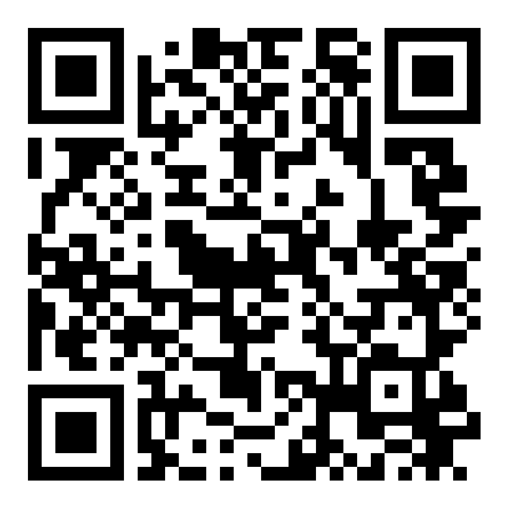
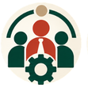
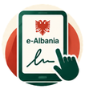
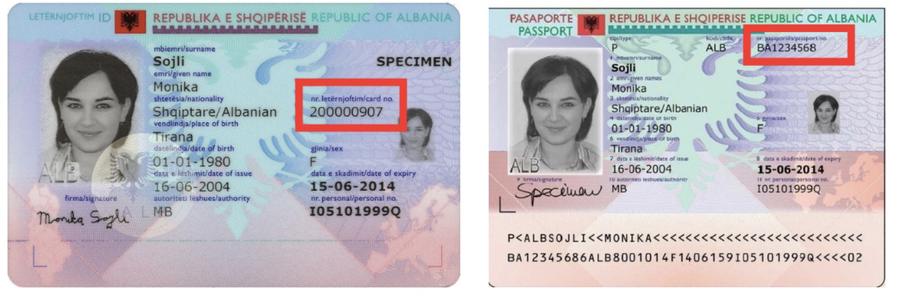

Zona më të pakta dhe lista 100% të hapura
Zvogëlim i numrit të zonave zgjedhore dhe votim me lista 100% të hapura për deputetë dhe anëtarë të këshillave bashkiakë.
Lexo propoziminNISMË QYTETARE Propozim
Një nismë për ndryshime në Kodin Zgjedhor të Shqipërisë. Njihu me propozimin dhe bëhu pjesë e tij me firmën tënde.
Firma jote mbështet nismën. Miratimi i ndryshimeve i takon Kuvendit.

Grupi WhatsAppBëhu vullnetar dhe merr informacion për koordinimin.chat.whatsapp.com/KWXbIFQDmuu4qSU68XajHm01 / ÇFARË PROPOZOHET
Propozimi synon më shumë mundësi për qytetarët dhe më shumë përgjegjësi në procesin zgjedhor.
Zvogëlim i numrit të zonave zgjedhore dhe votim me lista 100% të hapura për deputetë dhe anëtarë të këshillave bashkiakë.
Lexo propoziminPjesëmarrje e qytetarëve në garën zgjedhore përmes listave qytetare me kandidatë të pavarur.
Lexo propozimin
03Depolitizim dhe departizim i komisioneve zgjedhore dhe i grupeve të numërimit të votave.
Lexo propoziminMundësi për votim në shtëpi për zgjedhësit me aftësi të kufizuara, sipas kushteve dhe procedurave të propozuara.
Lexo propoziminZvogëlim i mundësive për përdorimin e aseteve publike, presionin ndaj zgjedhësve dhe paratë e pista, si edhe forcim i penaliteteve për shkelësit e ligjit.
Lexo propoziminNË DETAJE
Hap një temë për të kuptuar propozimin, kë prek dhe ku gjendet në dokument.
Referencat dallojnë nenet e projektligjit nga nenet e Kodit që ai propozon të ndryshojë.
Shkarko projektligjinDrafti njeh lista qytetare me një ose më shumë kandidatë për Kuvendin dhe këshillat bashkiakë, për të zgjeruar mundësitë e përfaqësimit jashtë strukturave partiake.

Mbledhje dhe verifikimin digjital të firmave përmes e-AlbaniaPropozohet një platformë digjitale për mbledhjen dhe verifikimin e firmave për kandidime qytetare, përmes identifikimit në e-Albania. Për këtë nismë, formulari i mbështetjes mbetet fizik.
Zgjedhësi mund të shprehë parapëlqimin për një kandidat dhe listat mund të rirenditen sipas votave të kandidatëve, sipas rregullave të draftit.
Komisionet dhe grupet e numërimit parashikohen të përzgjidhen me short, me trajnim, certifikim dhe kritere profesionale, për një administratë më pak të varur nga partitë.
Drafti propozon katër rajone zgjedhore dhe shpërndarje mandatesh në nivel rajonal, sipas metodës së përshkruar në projektligj.
Parashikohen procedura për votim me kuti të lëvizshme për zgjedhësit që plotësojnë kushtet dhe kërkojnë këtë shërbim.
Propozohen mjete ndihmëse, informacion i përshtatur dhe asistencë, duke ruajtur fshehtësinë dhe integritetin e votës.
Regjistri i zgjedhësve propozohet të përditësohet elektronikisht në kohë reale dhe të auditohet periodikisht nga një institucion i pavarur.
Votat për subjektet zgjedhore propozohet të numërohen në qendrën e votimit menjëherë pas mbylljes së votimit, me procedura kontrolli dhe publikimi.
Propozohen kontroll më i fortë i financimit politik, kufizime për përdorimin e burimeve publike dhe masa kundër shkeljeve.
02 / FIRMA JOTE
Firma bëhet në letër. Më pas zgjidh një nga dy mënyrat e dorëzimit: përmes një mbledhësi ose me postë.
Shkarko formularin → Plotëso të dhënat → Firmos fizikisht → Dërgo materialin
Përdor formularin zyrtar të KQZ-së për këtë nismë. Dokumenti përmban dy faqe.
Shkarko formularin PDF · Shqip · 1.6 MBPlotëso vetëm kolonat e formularit: emër, mbiemër, atësi, datëlindje, vendlindje, numër ID dhe numër kontakti. Përdor stilolaps, shkronja kapitale dhe shkrim të qartë. Kopjo të dhënat me kujdes nga letërnjoftimi ose pasaporta shqiptare e vlefshme; mos fotografo, fotokopjo ose dërgo dokumentin e identifikimit.
Kontrollo që nënshkruesi të jetë shtetas shqiptar, 18 vjeç ose më shumë, me të drejtë vote. Për numrat jashtë Shqipërisë përdor edhe prefiksin e shtetit, si +39, +44 ose +1.
Nënshkruesi duhet ta kontrollojë formularin dhe të firmosë personalisht, vetëm një herë dhe në emër të vet. Para dorëzimit, kontrollo që çdo fushë të jetë e plotë, e saktë, e lexueshme dhe pa korrigjime.
Dërgo formularin origjinal të firmosur përmes një mbledhësi ose me postë.
Nëse dërgoni nga jashtë Shqipërisë:
Elton Jani
Vršovická 1525/1b, Praha 10, 10100
Czech Republic
Nëse dërgoni brenda Shqipërisë:
Gerta Meta
Rruga "Irfan Tomini"
Pll 12/1 Shk 3 AP 22
Tiranë
Për organizimin e dorëzimit, kontaktoni grupin WhatsApp ose një nga kontaktet:
+355 69 438 2248 — Edmond Çata
+420 732 606 195 — Elton Jani
+355 69 246 9393 — Gerta Meta
+355 68 214 0737 — Kristaq Kume
+355 67 204 0501 — Edlira Çepani
Në dyshim: ndalo plotësimin dhe kontakto grupin WhatsApp — mos improvizo.

Mos shkruaj në pjesë të tjera të formularit.
Nënshkruesi duhet të jetë shtetas shqiptar, 18 vjeç ose më shumë, me të drejtë vote dhe të figurojë në listën e zgjedhësve të Shqipërisë. Duhet të paraqesë letërnjoftim ose pasaportë shqiptare të vlefshme. Kontrollo datën e skadencës dhe që dokumenti i përket personit përpara teje.
Shkruaj qartë dhe plotëso çdo fushë, duke u bazuar në dokumentin shqiptar të identifikimit. Në rast gabimi, kalo në një rresht tjetër; nëse nuk mund të përdorësh një fletë të re tip, vendos një vijë mbi rreshtin e gabuar.
Mbledhësi i autorizuar ose nënshkruesi plotëson të dhënat e nënshkruesit duke i kopjuar me kujdes nga dokumenti shqiptar i identifikimit. Nënshkruesi kontrollon të dhënat e shkruara dhe firmos personalisht. Përdor shkronja kapitale, shkrim të qartë dhe plotëso çdo fushë.
TE “NUMRI ID” SHËNO NUMRIN E LETËRNJOFTIMIT OSE TË PASAPORTËS SHQIPTARE, DUKE KOPJUAR NUMRIN E DOKUMENTIT.
MOS VENDOS NUMRIN PERSONAL.
Për shembull: +39, +44 ose +1.
Nënshkruesi firmos vetëm një herë. Askush nuk firmos në emër të një personi tjetër, as brenda familjes.
Para se të largohesh, verifiko që të gjitha fushat janë të plota, të sakta, të lexueshme dhe pa korrigjime.
* Numri i kontaktit kërkohet që KQZ-ja, kur e vlerëson të nevojshme, të mund të kontaktojë nënshkruesin për të konfirmuar vullnetin e shprehur. Fotoja në telefon, dokumenti i skanuar ose fotokopja e ID-së nuk zëvendësojnë kontrollin e dokumentit.
03 / BËHU PJESË
Bëhu vullnetar për mbledhjen e firmave
Ndihmo që nisma të arrijë te më shumë qytetarë, në qytetin tënd ose kudo ku jeton. Në të njëjtin vend mund të angazhohen disa koordinatorë.
SI MUND TË NDIHMOSH
Shpjego propozimin dhe mënyrën e firmosjes.
Jep formularët zyrtarë dhe mblidh fletët e firmosura fizikisht.
Koordinohu me vullnetarët në qytetin ose shtetin tënd.
Lidhu me ekipin për të dërguar formularët në Shqipëri.
PYETJE TË SHPESHTA
Një paketë ndryshimesh në Kodin Zgjedhor për përfaqësimin qytetar, administrimin e zgjedhjeve, transparencën dhe aksesin në votim. Lexo katër temat kryesore ose hap shpjegimet e plota sipas temës.
Dokumenti që prezantohet këtu është projektligj. Firma mbështet nismën; nuk e miraton automatikisht ligjin. Miratimi i ndryshimeve i takon Kuvendit.
Shkarko formularin zyrtar, printoje, plotëso fushat e kërkuara dhe firmose me dorë. Pastaj dorëzoje përmes një mbledhësi ose me postë. Nëse dërgon nga jashtë Shqipërisë, përdor këtë adresë:
Elton Jani
Vršovická 1525/1b, Praha 10, 10100
Czech Republic.
Jo përmes kësaj faqeje. Sipas udhëzimeve të nismës, mbështetja jepet me firmë fizike në formularin e printuar. Pas firmosjes në letër, formulari dorëzohet përmes një mbledhësi ose me postë. Propozimi për një platformë digjitale lidhet me rregullat e ardhshme të kandidimit.
Sipas udhëzimeve të nismës, shtetasit shqiptarë me të drejtë vote mund të kontribuojnë edhe nga jashtë. Printo dhe firmos formularin. Mund ta dorëzosh përmes një personi që mbledh formularët në vendin ku jeton ose ta dërgosh vetë me postë në këtë adresë:
Elton Jani
Vršovická 1525/1b, Praha 10, 10100
Czech Republic.
Ke dy mundësi: dorëzoje te një person që mbledh formularët ose dërgoje drejtpërdrejt me postë. Nga jashtë Shqipërisë, dërgoje në:
Elton Jani
Vršovická 1525/1b, Praha 10, 10100
Czech Republic.
Brenda Shqipërisë, dërgoje te:
Gerta Meta
Rruga "Irfan Tomini"
Pll 12/1 Shk 3 AP 22
Tiranë.
Për koordinim, kontakto grupin WhatsApp ose një nga kontaktet:
+355 69 438 2248 — Edmond Çata
+420 732 606 195 — Elton Jani
+355 69 246 9393 — Gerta Meta
+355 68 214 0737 — Kristaq Kume
+355 67 204 0501 — Edlira Çepani.
Shkruaji ekipit në WhatsApp ose telefono një nga kontaktet:
+355 69 438 2248 — Edmond Çata
+420 732 606 195 — Elton Jani
+355 69 246 9393 — Gerta Meta
+355 68 214 0737 — Kristaq Kume
+355 67 204 0501 — Edlira Çepani
Email: edmondcata@hotmail.com, gertameta@yahoo.com, veprimi.qytetar@gmail.com.
Trego qytetin dhe shtetin ku ndodhesh. Mund të ndihmosh me informimin, shpërndarjen, mbledhjen dhe dorëzimin e formularëve.
Nismës i nevojiten të paktën 20 000 firma mbështetëse për t’u paraqitur në Kuvend. Ky është numri i kërkuar për nismën; në këtë faqe nuk publikohet një numër i firmave të mbledhura. Firma mbështet propozimin, ndërsa miratimi i ndryshimeve i takon Kuvendit.
Afati i përditësuar i shënuar në fletëpalosjet e nismës është 15 dhjetor 2026.
Te seksioni “Dokumente” mund të shkarkosh projektligjin origjinal në format DOCX, përmbledhjen dhe fletëpalosjet.
Po. Hap lidhjen “EN” në krye të faqes për një përmbledhje në anglisht. Te dokumentet gjenden fletëpalosja anglisht dhe versioni dygjuhësh.
RRETH NISMËS
“Veprimi Qytetar për Demokraci Funksionale” bashkon qytetarë dhe përfaqësues të shoqërisë civile në nismën për ndryshime në Kodin Zgjedhor. Përmes këtij propozimi, synon një reformë të ndërtuar me pjesëmarrjen e drejtpërdrejtë të qytetarëve.
Projektligji dhe materialet informuese të paraqitura në këtë faqe janë pjesë e kësaj nisme. Qytetarët mund të kontribuojnë duke u informuar, duke firmosur formularin ose duke ndihmuar në mbledhjen e firmave.
Ndiq Veprimin Qytetar në Facebook ↗BURIMET ORIGJINALE
Projektligji, formulari dhe materialet shpjeguese, në një vend. Informohu përpara se të firmosësh.
Për ta printuar dhe firmosur fizikisht.
Amendamentet e propozuara dhe relacioni.
Një shpjegim i zgjeruar i ndryshimeve.
Material informues i nismës.
An introduction to the citizen-led proposal.
Për ta ndarë me miqtë në Shqipëri dhe jashtë.
Shembull i strukturës së një broshure të palosshme.
PËR KRAHASIM
Propozimi i referohet Kodit Zgjedhor në fuqi. Lexoje tekstin aktual në burimet e mëposhtme zyrtare dhe ligjore:
Artikuj të jashtëm për kontekst; burimi për përmbajtjen e propozimit mbetet projektligji.
Euronews Albania · Nismëtarët e kërkesës për ndryshime në Kodin Zgjedhor ↗Lapsi · Kur kërkesat për reformë zgjedhore takohen me frymën e protestës ↗